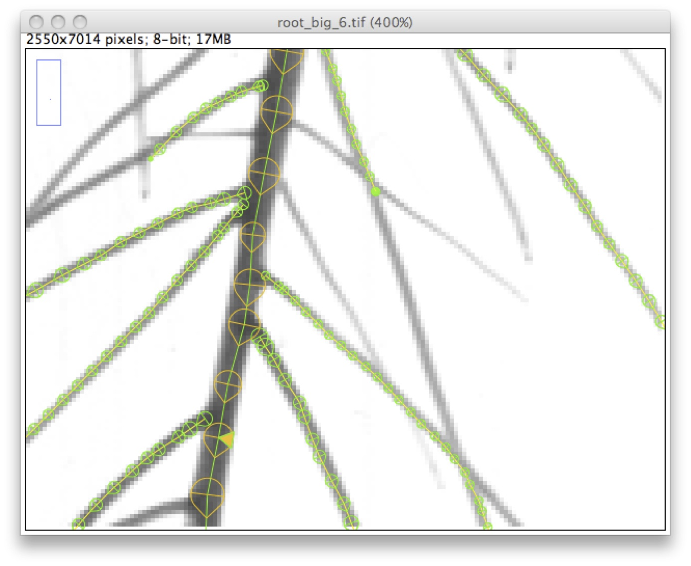
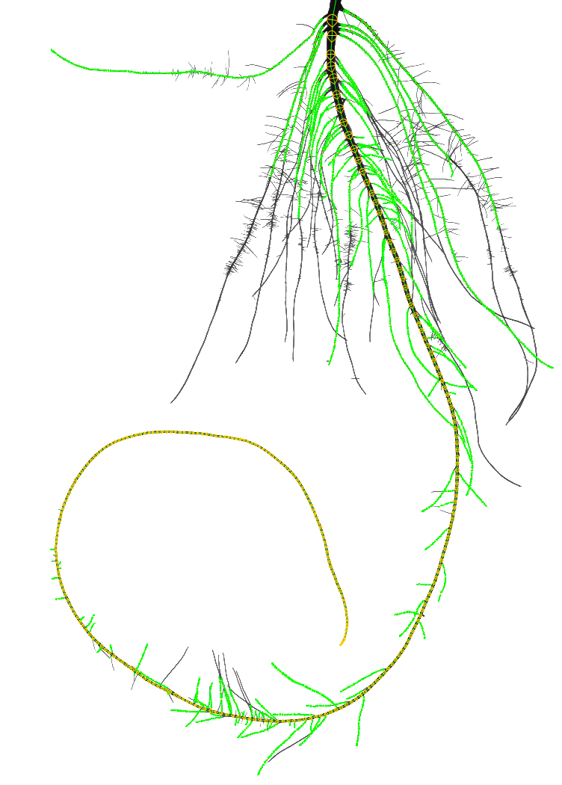
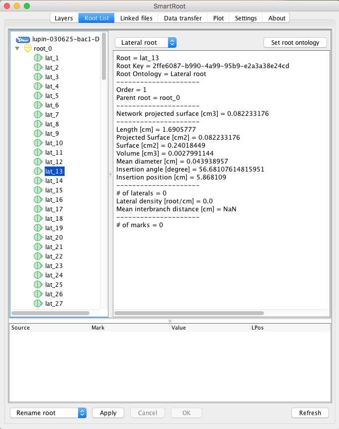
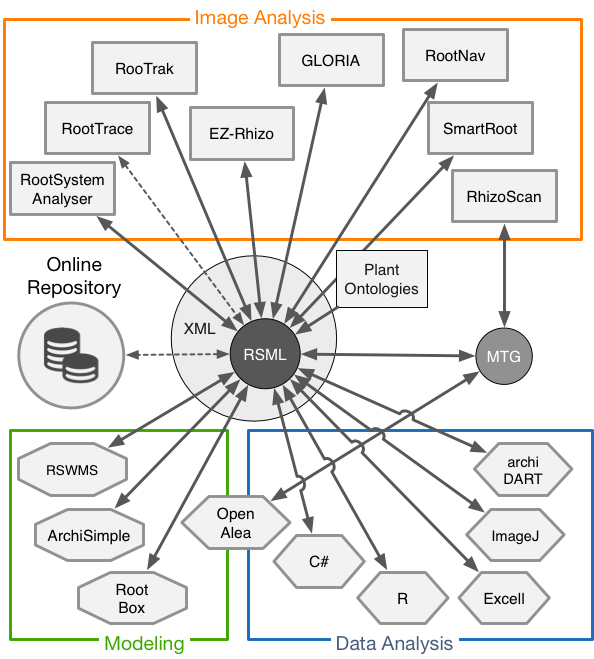
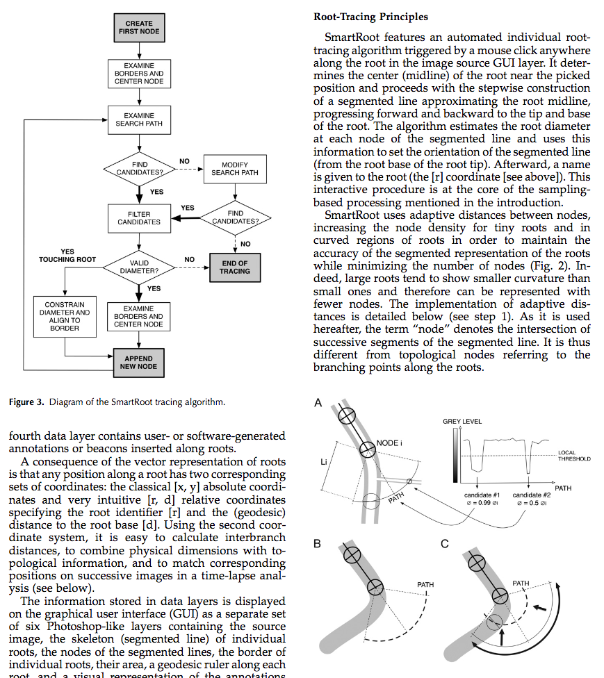

Features
SmartRoot is :
- Semi-automated
- Platform-independent (Windows, Mac OSX, Linux)
- Free
SmartRoot works with:
- Wide range of image type and quality
- All plant species
- Mature root systems
- Time-series
SmartRoot built-in tools:
- Actions on several traced roots
- Basic plot generator
- SQL database export
- CSV export
- Various types of root annotations
Measured traits:
- Root length
- Root diameter
- Root insertion angle
- Lateral density
- Interbranch distance
- Growth
- Root direction
- etc
Requirements
- Java 1.5 or higher
- ImageJ 1.44 or higher
- At least 1024M of RAM
Installing SmartRoot
SmartRoot was developped as an ImageJ plugin. To install it, follow the next steps:- Install ImageJ of Fiji
- Download SmartRoot files
- Copy the jat files to the `imageJ/plugins` folder

Root System Markup Language
RootSystemML is a file format to represent root architectural data. It has been designed to overcome two major challenges: To enable portability of root architecture data between different software tools in an easy and interoperable manner allowing seamless collaborative work. To provide a standard format upon which to base central repositories which will soon arise following the expanding worldwide root phenotyping effort. RSML allows to store 2D or 3D image metadata, plant and root properties and geometries, continuous functions along individual root paths and a suite of annotations at the image, plant or root scales, at one or several time points. The plant ontologies are used to describe botanical entities that are relevant at the scale of root system architecture. RSML website RSML paper


How to cite us
A Novel Image Analysis Toolbox Enabling Quantitative Analysis of Root System Architecture. Guillaume Lobet, Loic Pages and Xavier Draye. 2011 Plant Physiology, Vol. 157
SmartRoot is OpenSource
SmartRoot is free to use and released under a GPL licence. It means that redistribution and use in source and binary forms, with or without modification, are permitted under the GNU General Public License v3 and provided that the following conditions are met:- Redistributions of source code must retain the above copyright notice, this list of conditions and the following disclaimer.
- Redistributions in binary form must reproduce the above copyright notice, this list of conditions and the following disclaimer in the documentation and/or other materials provided with the distribution.
- Neither the name of the copyright holder nor the names of its contributors may be used to endorse or promote products derived from this software without specific prior written permission.